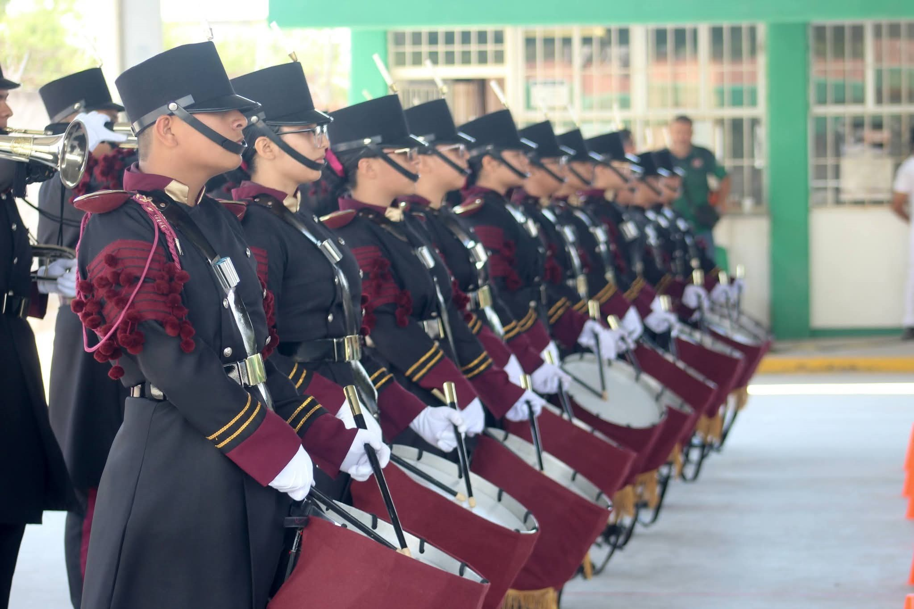

📅 30 de marzo de 2026
Banda de Guerra destaca en la Cuarta Copa Asiles
La Banda de Guerra del ITACE Plantel Reynosa participó en la Cuarta Copa Asiles 2026, celebrada en Reynosa, Tamaulipas.
Gracias a su disciplina, esfuerzo y preparación, obtuvo el segundo lugar en la categoría Preparatoria, demostrando el talento y compromiso de sus integrantes.
✦ Talento y disciplina Ver publicación completa ↗